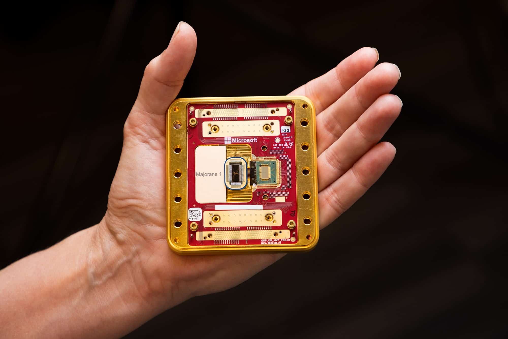

Innovazioni tecnologiche emergenti
Il futuro dell'informatica è segnato da innovazioni straordinarie. Il quantum computing promette potenze di calcolo impensabili che rivoluzioneranno campi come la crittografia e la simulazione di molecole complesse.
L'intelligenza artificiale continua a evolversi, permettendo automazione avanzata, analisi predittive e assistenza personalizzata in moltissimi settori.
Sostenibilità e responsabilità etica
La crescente domanda di risorse informatiche pone sfide ambientali. Data center più efficienti e software ottimizzato sono fondamentali per ridurre l'impatto energetico.
Inoltre, è sempre più importante sviluppare tecnologie etiche, evitando bias nei dati e garantendo la privacy degli utenti.
Robotica e automazione
I robot umanoidi saranno sempre più presenti in assistenza, medicina, industria...
Le competenze del futuro informatico
Le figure professionali dovranno combinare conoscenze tecniche avanzate con capacità trasversali, come problem solving, lavoro di gruppo e attenzione alle implicazioni sociali della tecnologia.
Conclusione
Il futuro dell'informatica è ricco di opportunità e sfide. Prepararsi oggi significa aprire la porta a carriere stimolanti e contribuire a un mondo tecnologico più sostenibile e inclusivo.